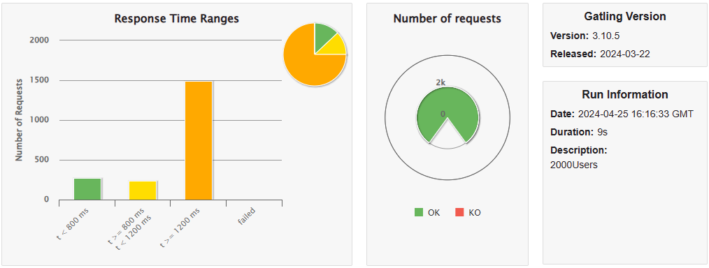
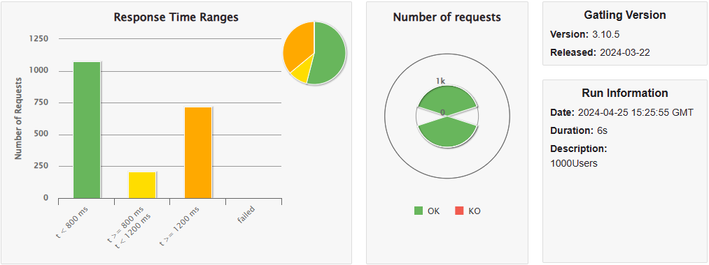

1. Introduction and Goals
This web application, inspired by the famous Spanish TV show "Saber y ganar," consists of a mini-game of questions and answers. In this game, the player is asked a question and presented with four possible answers, of which only one is correct.
For all those "Saber y ganar" viewers who wanted to participate in the show, this application is ideal for testing their knowledge.
The application automatically generates questions with the help of Wikidata (the page that supports Wikipedia and many other wikis) to constantly update the questions instead of storing them in a database.
1.1. Requirements overview
The requirements of the application are as follows:
-
The player must register with a name and be able to see his personal score and the ranking of the best players.
-
Automatically generate questions from Wikidata.
-
The player must answer the question within a time limit.
-
If the player does not answer, it will be counted as an incorrect response.
-
Each correct answer earns points.
-
Optionally, the score can be saved in a ranking.
-
Offer and API to access the questions and answers.
The overall goal of the application is to provide a fun and challenging experience for the user, while also providing a way to test their knowledge.
1.2. Quality Goals
| Nº | Atributo | Motivacion |
|---|---|---|
1 |
Efficiency |
Access, creation of questions, and navigation between them should be fast to ensure user satisfaction. |
2 |
Usability |
The application should be appealing to all fans of the original program while also offering a wide variety of questions. |
3 |
Manteinance |
The application should ensure easy expansion and modification to provide users with new features. |
4 |
Availability |
Our goal is to achieve at least 95% availability, ensuring that the system is always available for users to play. |
5 |
Responsiveness |
The system must be responsive, providing a good user experience for those in desktop and mobile environments. |
1.3. Stakeholders
| Role/Name | Expectations |
|---|---|
HappySw |
A company developing the application aiming to earn money through its development and recognition at the Spanish level. |
RTVE |
A Spanish television network that hired the development to promote its program. |
Uniovi students |
The application developers who want to pass the subject. |
ArquiSoft teachers |
The evaluators of the program development and final version who want their students to pass. |
2. Architecture Constraints
-
Mandatory Usage of WikiData API: The WikiData API must be utilized as an integral part of the system, and interactions with WikiData are obligatory for data retrieval and integration.
-
Web Frontend Requirement: The system must include at least one web frontend, and it is mandatory for deployment.
-
Users log in and game history: The users will be able to register in the system and consult their participation history in the system.
-
Limited time in questions: The questions must have a limited time to be responded.
-
Questions must have 4 posible answers Each question will have one correct answer and several incorrect answers. Both the correct and incorrect answers will be generated automatically.
-
System API: System will allow accessing user information and the information of the generated questions through an API.
3. System Scope and Context
3.1. Business Context

-
Player: Represents users who interact with the application to play games or view their history.
-
System (QuestionGame): The main system that hosts the game logic and manages user interactions.
-
WikiData: Component used to retrieve data from Wikidata and automatically generate questions.
-
Database: Stores system information, such as user data, generated questions, game history, etc.
-
External Developers: Represents developers who access the system’s REST API to retrieve player and question data.
3.2. Technical Context

-
User Agent: Represents the web or mobile interface used by users.
-
QuestionGame server: The server-side components, including the Frontend, QuestionGame logic, User’s API, and Question’s API.
-
HTTPS: Represents the communication channels, with HTTPS being the protocol used for secure communication.
-
Question Generation: Represents the means used for question and answers generation.
-
Database: Represents whichever system used for data persistence.
-
To be decided: Indicates that specific details about the channels and protocols are yet to be determined.
3.2.1. Input/Output Mapping Table
| Component | Input/Output | Channel/Protocol |
|---|---|---|
User’s API |
User registration, game history |
HTTPS |
Question’s API |
Question data retrieval |
HTTPS |
Frontend |
User interactions, game display |
HTTPS |
Database |
User data, game history, questions |
Specific database driver |
WikiData |
Data for question generation |
HTTP |
4. Solution Strategy
4.1. Technological Decisions
-
Programming Language: Java will be used for system development because all team members are familiar with it, and we believe we can perform better using this language.
-
Frontend Framework: SpringBoot will be adopted for frontend development because it allows us to deploy a web application using Java and provides numerous functionalities that greatly facilitate the implementation of project requirements, such as user authentication.
-
Database: A relational database will be used. HSQLDB for local tests and MySQL for production were selected as the storages engines due to the modeled entities having a strong, fixed structure and the multiple relationships between them. Besides that, the team has experience with these databases and will allow an easier flow of development.
4.2. System Decomposition
The Model-View-Controler architecture pattern will be followed for structuring the system, dividing it into modules/classes responsible for the managment of the players, questions, answers and game, and the views of the frontend.
4.3. Organizational Decisions
Development Methodology: GitFlow will be adopted for project management, facilitating collaboration and iterative delivery.
-
The default branch: master. This branch will only be used to create new releases and will contain the most stable version of the system.
-
The development branch: develop. This branch will be used to integrate the features developed by the team and will be the basis for creating new releases. This will have the largest commit amount, and will also have a stable version that could be deployed at any time.
-
Feature branches: These branches will be used to develop new features, and will be created from the develop branch. After the feature is developed, it will be merged into the develop branch and branch can be deleted, although we will not usually delete branches.
-
Fix branches: These branches will be used to fix bugs, and will be created from the develop branch. After the bug is fixed, it will be merged into the develop branch and branch can be deleted, although we will not usually delete branches.
5. Building Block View
The Building Block View elaborates on the static structure of the system. It decomposes the system into building blocks like modules, components, subsystems, and others, detailing their responsibilities and relationships.
5.1. Whitebox Overall System
This section provides an overview of the main components of the system and their interactions. The core of the system is the WIQ (QuestionGame) component, which interfaces with Users, Wikidata for question generation, a Database for persistence, and offers a REST API for External Developers.

5.1.1. Motivation
The decomposition provides a clear, high-level overview of how the WIQ system interacts with users, external services (Wikidata), stores data (Database), and interfaces with external developers through the REST API. This modularity supports scalability and maintainability.
5.1.2. Contained Building Blocks
| Name | Description |
|---|---|
User |
Represents the end users of the WIQ application, interacting with the system to play games and view their history. |
WIQ (QuestionGame) |
The central component that manages gameplay logic, user interactions, and integrates external data for question generation. |
Wikidata |
An external service utilized by the WIQ system to retrieve data for dynamically generating quiz questions. |
Database |
Maintains persistent storage for user data, game history, and generated questions, ensuring data integrity and availability. |
External Developers |
Developers or systems that interact with the WIQ system via the REST API to access or modify player and question data. |
5.2. Level 2
For Level 2 of the Building Block View, the WIQ (QuestionGame) system is further decomposed into four primary components that define its operational structure. Each component is designed to fulfill specific roles within the architecture, ensuring the system’s functionality and responsiveness to user interactions.
-
GameService: This component acts as the core of the QuestionGame, orchestrating the flow of games, managing question selection, enforcing game rules, and tracking scores. It ensures that gameplay proceeds smoothly and according to the predefined logic, offering a seamless experience for the user.
-
PlayerService: Responsible for handling user accounts, this component manages registration, authentication, and profile management. It safeguards user data while providing a personalized experience through game history tracking and preference settings.
-
QuestionService: This component interacts directly with the Wikidata service to fetch data for question generation. It processes and curates content to produce relevant, challenging questions for the game, thereby ensuring a varied and educational experience.
-
RestApiService: Serving as the gateway for external developers, this component exposes a set of RESTful APIs that allow access to player information and question data. It handles request processing, authentication, and data delivery, facilitating third-party integrations and extensions of the WIQ platform.
5.3. Level 3
In Level 3, we take a closer look at the API Management component, breaking it down into two essential services: the Player Information API and the Question Information API. These services are fundamental to the system’s ability to interact with external applications, providing necessary functionalities with a focus on usability and security.
-
Player Information API: This API serves as the gateway for external applications to access and manage player data. It allows for operations such as retrieving player profiles, updating personal information, and viewing game history. The design prioritizes data security, ensuring safe and secure access to sensitive information. The interface is straightforward, designed for ease of use while maintaining comprehensive functionality.
-
Question Information API: Dedicated to the dynamic world of quiz questions, this API facilitates the retrieval of questions and submission of answers. It stands as a bridge between the system’s vast question repository and external applications, enabling a seamless flow of information. The API adheres to clear and logical request and response structures, ensuring efficient and effective communication. Security measures are in place to protect the integrity of the question data and the fairness of the game.
This level of documentation provides a structured and clear view of the system’s architecture, particularly focusing on its integration points. By balancing formal language with accessibility, we aim to communicate effectively with a broad audience of stakeholders, ensuring understanding and transparency in the system’s design.
6. Runtime View
6.1. User Authentication

6.2. Question Generation

6.3. User Responds to a Question

6.4. User Checks their History

6.5. Access to User Information via an API

6.6. Access to Generated Questions Information via an API

7. Deployment View
The deployment strategy for our game, which leverages the Wikidata API to dynamically generate questions, is built around a Docker-based infrastructure. This approach allows for the encapsulation of our Java Spring Boot application within a Docker container, simplifying deployments across different environments (development, testing, and production) while ensuring consistency and isolation.
7.1. Infrastructure Level 1
Our application is containerized using Docker, enabling us to deploy the entire stack as a single .jar file that includes the web server. This method ensures that our application can be easily moved across environments or scaled up as needed without significant changes to the infrastructure.
Overview Diagram: The infrastructure features a single Docker container that hosts the Java Spring Boot application. This container communicates with external services, such as the Wikidata API, to fetch data in real-time and generate game questions.
The primary motivation behind using Docker for deployment is to streamline the development and deployment processes. By containerizing the application, we reduce discrepancies between environments, making it easier to develop, test, and deploy with confidence.
-
Portability: Docker containers can run on any system that has Docker installed, reducing environment-specific bugs.
-
Scalability: While we start with a single container, the setup can be easily scaled using Docker Compose or Docker Swarm if the need arises.
-
Efficiency: Docker utilizes resources more efficiently than traditional VMs, allowing for faster startup times and lower overhead.
-
Web Server/Application (.jar file): Packaged within a Docker container, it includes all necessary dependencies to run independently across any Docker-supported platform.
-
External APIs (e.g., Wikidata API): Accessed over the network, these APIs provide dynamic content for the game.
7.2. Infrastructure Level 2
At this level, we describe the Docker container configuration that encapsulates our application.
7.2.1. Docker Container
Our app’s Docker container is built from a Java base image, which is then layered with our applicationâs .jar file.
In addition to the Spring boot standalone file, we also use the official MySQL server docker container image brought by DockerHub. This is our database server and it is used to store the game data, such as user scores, questions, etc. and all the other persistent data.
This setup encapsulates the entire runtime environment required for our application, and does not require extensive configuration.

This diagram illustrates the internal structure of our Docker containers structure. It shows the Java Spring Boot application, including the embedded web server, packaged as a .jar file and the MySQL server. The application interacts with external APIs, like the Wikidata API, to retrieve data necessary for generating game questions. The containerized approach ensures that the application can be deployed consistently across any environment that supports Docker.
8. Cross-cutting Concepts
The following concepts provide a foundation for the design and implementation of the trivia game project, which utilizes the Wikidata API for dynamic question generation and employs a hexagonal architecture for its Java Spring Boot application.
8.1. Domain Model
The domain model for our game includes entities such as Question, Category, Player, Role, or GameSession. These are crucial for representing the game’s data and logic. The model serves as the basis for interactions within the application and between the application and the database.
8.2. Hexagonal Architecture
Our application is structured using hexagonal architecture principles, which prioritize the separation of core logic from peripheral concerns like user interface and external API interactions.
This architecture facilitates the creation of a flexible and maintainable codebase. It allows for easy adaptation to changes in external services or user interface technologies without impacting the application’s core logic.
8.3. Java Persistence API (JPA) for Data Management
We use JPA for data persistence to abstract and handle all database operations, allowing for a more streamlined and object-oriented approach to data handling.
JPA enables us to map our domain objects to the database schema with ease, providing a clear layer of abstraction that simplifies data persistence and retrieval while ensuring our application remains agnostic of the underlying database technology.
8.4. Logging with Slf4j and System.out
For monitoring runtime behavior and troubleshooting, the project utilizes Slf4j, bundled with Sprint Boot, and System.out for logging. While Slf4j offers more sophisticated logging capabilities, System.out is used for straightforward, immediate console output.
Slf4j is configured to capture various levels of output, which can be directed to multiple destinations such as console, files, or even remote logging servers. For simplicity and immediacy during development or less complex deployment scenarios, System.out is employed for logging output directly to the console.
8.5. Security
Security is a key concern, ensuring that user data and game integrity are protected. We implement standard security practices at various levels within the application
This includes securing the web layer with Spring Security, encrypting sensitive data, and protecting against common web vulnerabilities.
8.6. Performance Optimization
Performance optimization is considered in all aspects of the application, from the efficient design of the domain model to the configuration of the persistence layer.
We ensure that database interactions are efficient through JPA’s caching and lazy loading. Queries are optimized to fetch only the necessary data, minimizing response times and resource utilization.
8.7. Continuous Integration and Continuous Deployment (CI/CD)
The project adheres to CI/CD practices, facilitating automated testing, building, and deployment processes which contribute to the robustness and reliability of the application.
Our CI/CD pipeline automates the process of integrating code changes, building the application, running tests, and deploying the Dockerized application, ensuring consistent and reliable delivery of updates.
8.8. Scalability
Designing for scalability, the application can accommodate an increasing number of users and interactions without performance degradation. .Explanation: Scalable solutions such as Docker containers allow the application to be deployed in a distributed environment, where resources can be adjusted based on demand.
9. Architecture Decisions
The purpose of this section is to create an ordered list of architectural decisions that we will make as we develop the project. This list will be ordered according to the importance of the decision.
10. Quality Requirements
10.1. Quality Tree
| Quality requirement | Description | Scenario |
|---|---|---|
Efficiency |
Access, creation of questions, and navigation between them should be fast to ensure user satisfaction. |
SC1 |
Usability |
The application should be appealing to all fans of the original program while also offering a wide variety of questions. |
SC2 |
Manteinance |
The application should ensure easy expansion and modification to provide users with new features. |
SC3 |
Availability |
Our goal is to achieve at least 95% availability, ensuring that the system is always available for users to play. |
SC4 |
Responsiveness |
The system must be responsive, providing a good user experience for those in desktop and mobile environments. |
SC5 |
Testability |
The system must facilitate the testing process(creating test cases, executing tests, analyzing results…) |
SC6 |
Scalability |
The ability of a system to handle increasing workload or growing demands by adapting or expanding its capacity without compromising performance. |
SC7 |
Interoperability |
The system must have the ability of seamlessly communicate, exchange data, and work together effectively with different systems, applications, or components, even if they use different technologies. |
SC8 |
10.2. Quality Scenarios
| Identification | Scenario |
|---|---|
SC1 |
Users expect the application to load quickly and respond promptly to their interactions, ensuring a smooth and efficient user experience. |
SC2 |
The application’s user interface is designed intuitively, allowing users to navigate effortlessly and find what they need without confusion or frustration. |
SC3 |
Developers can easily add new features or modify existing ones without disrupting the overall functionality of the application, ensuring its long-term maintainability. |
SC4 |
Users rely on the application to be available whenever they want to play, and the system ensures a high level of uptime, minimizing downtime for maintenance or updates. |
SC5 |
Whether accessed from a desktop computer or a mobile device, users expect the application to adapt seamlessly to their screen size and input method, providing a consistent experience across platforms. |
SC6 |
The testing process is streamlined, allowing QA teams to efficiently create, execute, and analyze test cases, ensuring the reliability and stability of the application. |
SC7 |
As user demand grows, the application scales its resources dynamically to accommodate increased traffic and maintain optimal performance levels, ensuring a consistent user experience. |
SC8 |
The application seamlessly integrates with other systems, allowing for the exchange of data and functionality without compatibility issues, enhancing its overall interoperability. |
11. Risks and Technical Debts
| Priority | Risk | Description |
|---|---|---|
High |
Migration to Java |
Migration from the current project language, JavaScript (JS), to Java |
Medium |
IDE Configuration |
Version compatibility, extensions and other preferences to work perfectly without conflicts |
Medium |
Database |
Discuss which database is best for the project |
Low |
Docker |
Know how docker works, what it is for, how it is used and what its alternatives could be. |
| Priority | Debt | Description |
|---|---|---|
Low |
Microservices |
Research about microservices and what they can contribute to the project |
12. Glossary
| Term | Definition |
|---|---|
WikiData |
A collaborative platform that provides structured data for Wikimedia projects, including Wikipedia. |
Question |
Entity that encapsulates details of the trivia questions. |
Answer |
This entity contains the correct answer of the questions. |
Category |
Classifies questions into various topics, each question can only belong to one category. |
Player |
Represents users and their interactions with the game |
GameSession |
Maintains the state of play, including scores and progress. |
ApiKey |
Contains each player’s apiKey for personal security and access control. |
RestApiAccessLog |
This entity is used to register the access to the application. |
Associations |
Represents the associations between entities. It has internal classes for each association. |
13. Question Generation Strategy
The generation of questions in our application is handled through a combination of classes and interfaces, primarily QuestionGeneratorV2 and QuestionGeneratorService.
13.1. Question templates
The two classes mentioned before use a JSON file that stores the question templates. These templates are used to generalize the question generation process. The JSON file is structured as follows:
13.1.1. JSON Structure
The JSON has the following structure:
-
language_placeholder,question_placeholder, andanswer_placeholderare strings used as placeholders for the language, question, and answer, respectively. -
categoriesis an array containing objects representing different categories of questions.
Each category object has two properties:
-
name: The name of the category. -
questions: An array of objects representing questions within that category.
Each question object has the following properties:
-
type: The type of question. -
statements: An array of objects representing statements in different languages for the question. Each object has two properties:languageandstatement. -
question: The property queried to generate the question. -
answer: The property queried to obtain the answer. -
sparqlQuery: The SPARQL query used to retrieve data for generating the question and answer.
13.1.2. Compact Example of JSON Hierarchy
{
"language_placeholder": "[LANGUAGE]",
"question_placeholder": "[QUESTION]",
"answer_placeholder": "[ANSWER]",
"categories": [
{
"name": "Geography",
"questions": [
{
"type": "capital",
"statements": [
{
"language": "es",
"statement": "¿Cuál es la capital de [QUESTION]?"
},
{
"language": "en",
"statement": "What is the capital of [QUESTION]?"
},
{
"language": "fr",
"statement": "Quelle est la capitale de [QUESTION]?"
}
],
"question": "countryLabel",
"answer": "capitalLabel",
"sparqlQuery": "..."
},
{
"type": "currency",
"statements": [
{
"language": "es",
"statement": "¿Cuál es la moneda de [QUESTION]?"
},
{
"language": "en",
"statement": "What is the currency of [QUESTION]?"
},
{
"language": "fr",
"statement": "Quelle est la monnaie de [QUESTION]?"
}
],
"question": "countryLabel",
"answer": "currencyLabel",
"sparqlQuery": "..."
}
]
},
{
"name": "Science",
"questions": [
{
"type": "element",
"statements": [
{
"language": "es",
"statement": "¿Cuál es el sÃmbolo quÃmico del [QUESTION]?"
},
{
"language": "en",
"statement": "What is the chemical symbol of [QUESTION]?"
},
{
"language": "fr",
"statement": "Quel est le symbole chimique du [QUESTION]?"
}
],
"question": "elementLabel",
"answer": "symbol",
"sparqlQuery": "..."
}
]
}
]
}13.2. Example of a query
Here’s an example of how you could use this JSON structure to query information:
To execute a query you just need to build a SPARQL query that retrieves the data you need. For example, to get the capital of a country, you could use the following query:
select distinct ?country ?countryLabel ?capital ?capitalLabel where {
?country wdt:P31 wd:Q6256 .
?capital wdt:P31 wd:Q5119 .
?country wdt:P36 ?capital .
?country rdfs:label ?countryLabel .
?capital rdfs:label ?capitalLabel .
FILTER NOT EXISTS {?country wdt:P31 wd:Q3024240} .
FILTER(LANG(?countryLabel)="es" && LANG(?capitalLabel)="es")
}Once you have a query the next step is to add it to thr JSON file. Following the previous example, you should start declaring a new object inside the questions array of the Geography category. You should fill the type, statements, question, answer, and sparqlQuery properties with the appropriate values. For the type field you could add the value "capital", for the statements array you could add the statements in different languages also adding to them the placeholder that you used in the question_placeholder field. For the question field you should add the value "countryLabel", for the answer you should add the value "capitalLabel". For the sparqlQuery field you should replace in your original query every instance of "countryLabel" with the value of question_placeholder and "capitalLabel" with the value of answer_placeholder. The final object should look like the one showed in the JSON hierarchy example.
By following this approach, you can dynamically generate a wide variety of questions based on the structured data stored in your JSON file. This allows for flexibility and scalability in your question generation process.
13.3. Question Generation Process
Once we have the JSON file with the question templates, we can start generating questions. Each time the application starts the QuestionGeneratorService class reads the JSON file and stores the question templates in memory. This way, the application can generate questions without needing to read the file each time. These templates are stored in a synchronized stack, which allows for thread-safe access to the templates. When the application starts after reading the JSON file and storing the templates the QuestionGeneratorService class deletes all the questions that are stored in the database. After deleting the questions, the QuestionGeneratorService starts a cycle that generates all the questions in all the 3 main languages of the app for a specific type of question each two and a half minutes. This cycle is repeated until all the question types are generated. After this every 24 hours the cycle will start again with the parsing of the JSON, filling the Stack, emptying the database and generating the questions. All this process can be forced by an Admin user through the Admin panel in the app where an Admin can change the JSON (which will lead to the restart of the question generation process) or delete all questions.
14. Testing
To be able to achieve continuous delivery, we need to have a good test coverage. We need to have a good test coverage to be able to refactor the code without breaking it, to be able to deliver the software with confidence and to be able to deliver the software with quality.
14.1. Unit Test
In our project, we have implemented unit tests for various components of the application. The tests are written in Java and use the JUnit 5 framework for testing. We also use the Spring Boot Test framework for testing Spring Boot applications, which provides utilities and annotations to test the application in a way that is very close to its actual runtime behavior. The tests are located in the src/test/java/com/uniovi directory. The main test class is Wiq_UnitTests.java, which contains tests for various services and repositories in our application.
14.2. Integration Test (E2E)
14.3. Load Test
We have implemented load tests to evaluate the performance of our website under extreme situations. For this we use the "Gatling" application, which allows us to evaluate a set of web requests by simulating the number of users who make them simultaneously. All tests have been carried out with a load of 1, 250, 1000, 2000 and 5000 users, for the following use cases: login, show profile, show apikey, play a game, show personal ranking, show the global ranking, change the language, return to the index and log out.
14.3.1. Test results
14.3.2. Login
1 User: 250 Users: 1000 Users: 2000 Users: 5000 Users: General information: All responses to the server have generally worked correctly, except for the third response, which logs in using existing credentials. We don’t know exactly why this last request doesn’t work. If we analyze how the number of users affects the login, at first it does not generate any errors, but response times increase considerably, until reaching 5000 active users at the same time, then there is some error related to a timeout.
14.3.3. Show ApiKey
1 User: 250 Users: 1000 Users: 2000 Users: 5000 Users: General information: For this use case, from the beginning all requests worked correctly. As the active users increased, the response time increased, but it was not until reaching 5,000 active users that the request failed, logically related to a timeout. In any case, the graph of the number of responses per second shows quite balanced, with only a large gap of erroneous requests.
14.3.4. Show profile
1 User: 250 Users: 1000 Users: 2000 Users: 5000 Users: General information: The results of the load tests carried out to show the player’s profile almost completely coincide with the results of showing the ApiKey, since in both tests two requests are made, which are supported very well by active users, up to 5000 users, where there are already some failed requests but in rare moments.
14.3.5. Play a game
1 User: 250 Users: 1000 Users: 2000 Users: 5000 Users: General information: The tests of playing the game were the most expensive loading test by far, since each of the users makes a total of 94 requests to the website, in which the vast majority of them are to update visual features of the game such as points, counter or time bar. These tests were so heavy that we had to modify the usability of the application on the host computer, because it ran out of resources when testing 1000 users. Surprisingly, the website supports up to 1000 active users simultaneously without causing any problems other than slightly high waiting times. But after 2,000 active users, failures increase exponentially. The graph of the 5000 users is shown below, where there is a peak in which there are 4193 active users and more than 5000 requests are being made, of which 3000 of them fail. In total, 280,000 requests are made, really heavy.
14.3.6. Show personal ranking
1 User:
 250 Users:
1000 Users:
2000 Users:
5000 Users:
General information: For these tests we return a little to normal, compared to the previous tests that were excessively heavy. For these tests, access to the personal ranking and its successive pages was attempted. The results were very positive, with very low response times for up to 5000 users, in the latter case generating some failures that are not proportionally relevant.
250 Users:
1000 Users:
2000 Users:
5000 Users:
General information: For these tests we return a little to normal, compared to the previous tests that were excessively heavy. For these tests, access to the personal ranking and its successive pages was attempted. The results were very positive, with very low response times for up to 5000 users, in the latter case generating some failures that are not proportionally relevant.
14.3.7. Show global ranking
1 User: 250 Users: 1000 Users: 2000 Users: 5000 Users: General information: These tests are very similar to the previous ones, but instead of being the personal ranking it is the global one. However, the response times are very different, being much longer in the case of the global ranking. This is because not only do you have to calculate all the players who have a score, but also add their internal scores to know their position in the ranking, which entails a much greater burden, leading to errors related to timeout when there are 5000 users. Furthermore, the graph shows a rather curious peak of errors, in which 2000 simultaneous requests are made and 1900 are failed.
14.3.8. Change language
1 User: 250 Users: 1000 Users: 2000 Users: 5000 Users: General information: The execution of these tests consisted of changing the language from the current one to English, then to French and finally to Spanish. Since it is an update of all the dialogues on the page, we assumed that it was going to cause more problems than the current ones. The tests showed considerably good response times even for the maximum number of users tested, in the latter case potentially generating some errors.
14.3.9. Return to the index
1 User: 250 Users: 1000 Users: 2000 Users:  5000 Users: General information: These results surprised us quite a bit, since we thought it was going to be the lightest action since it was only about loading the root directory of the website. However, the response times generated are much higher than expected, with half of the requests being longer than 1200ms for 1000 users, and for the maximum number of users, 9% of the requests failing.
14.3.10. Log out
1 User: 250 Users: 1000 Users:  2000 Users: 5000 Users: General information: Finally, tests were carried out to log out your user. These tests gave very positive results since, despite the fact that for many users there are high waiting times, no errors were caused due to a timeout. The only errors that you will see, now with the 5000 active users, have to do with the 'ClosedChannelException' exception, which is a verified exception in Java that occurs when trying to perform input/output operations on a channel that has been closed.
14.3.11. Conclusion
In conclusion, the tests generally show very positive results. In no test, except for the game, are there errors with up to 2000 users simultaneously, and errors begin to appear after 5000 users. Looking at the results, the lightest cases are showing the profile, showing the personal ranking and logging out. On the other hand, the hardest cases are playing the game (by far) and showing the global ranking. The tests of the 'multiplayer' game mode could not be carried out, because it was not yet fully implemented at the time of carrying out the load tests.